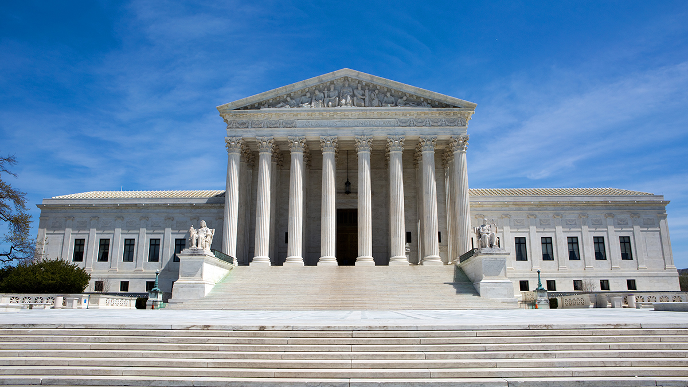

Article I of the Constitution established the legislative branch of the United States, defining its structure and outlining its powers. It set up the bicameral (two-house) nature of Congress for the main job of the legislature, which is to make the laws. The powers and responsibilities of the legislative branch were spelled out in broad strokes. Like much of the Constitution, it would take decades of trial and error and interpretation to arrive at an understanding of the roles of the different branches of government as they are today. It’s telling that the legislative branch was the first branch of government addressed. In the minds of many of the Founding Fathers, the legislative branch was of primary importance.
Article II established the executive branch of the US government. It set up the method for electing the president (the Electoral College) and the qualifications needed for a person to be president. The Constitution gives the president power as commander in chief of the military. He or she can also appoint officials in the executive branch.
At the time of the ratification of the Constitution, the executive branch was much smaller than it is now. While the Constitution certainly gave the executive branch much more power than it had under the Articles of Confederation, it was still nothing compared to modern American government. Decades of growth in size and influence of the federal government has resulted in a powerful executive branch in charge of millions of employees with a total budget in the trillions of dollars.

Article III established the judicial branch. The goal of the judicial branch is to interpret the law (including the Constitution itself) and settle disputes. This article called for the establishment of a Supreme Court and lesser federal courts. The creation of new federal courts was left up to Congress.
Judicial review is the process whereby the courts judge the constitutionality of executive and legislative actions. Judicial review is important because:
Interestingly enough, one of the main powers associated with the courts, judicial review, wasn’t mentioned in the Constitution. That power would be claimed later by the Supreme Court in the process of interpreting laws and the Constitution. The 1803 landmark case of Marbury v. Madison set the precedent for judicial review by invalidating an act of Congress.